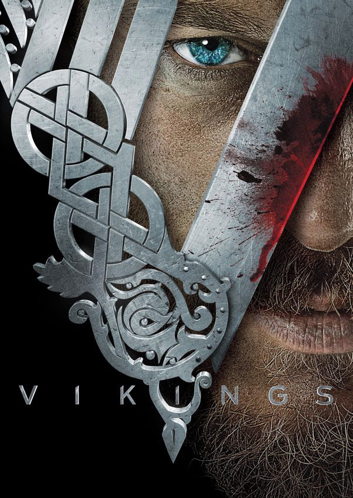
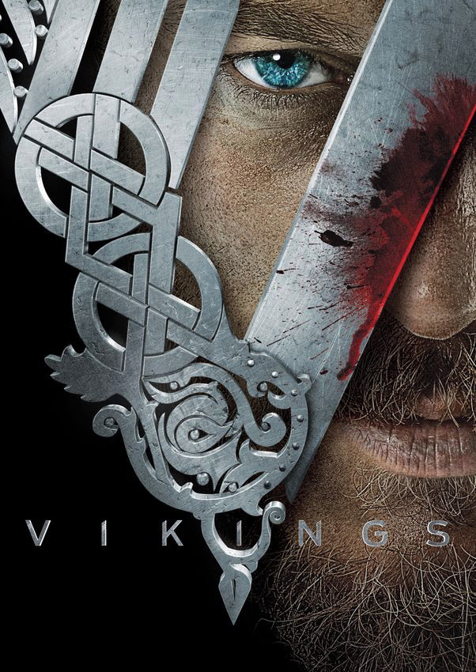

Bem vindo ao VICTOR-FLIX!
Aqui você vai encontrar minhas preferências dentro de algumas mídias diferentes, sendo elas: filmes, séries e jogos.
Cada imagem contém um link que te levará para um vídeo (trailer, crítica, etc) sobre a mídia em si. No caso das músicas, você será redirecionado para seu clipe ou áudio no YouTube.
Espero que goste do projeto e se identifique com algum item!
 
